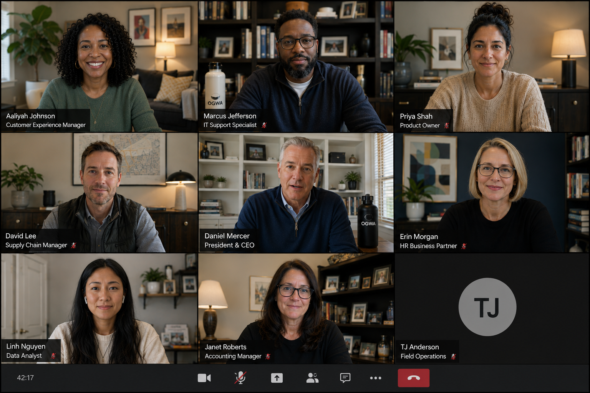

Case Study · Leadership Access
Perspectives
Desk & Margin designed a small-group employee conversation with the company president — then built a system that allowed those conversations to reach the broader organization.
The goal was simple: reduce the distance between employees and leadership during a period of significant organizational change.

The Need
Communication was plentiful. Proximity was not.
The organization was navigating significant change: acquisitions, integration, technology shifts, organizational redesign, and a largely distributed workforce.
Employees were receiving information, but formal communication could not fully answer the questions underneath it: What is leadership thinking? What does this change mean for us? Is anyone hearing what employees are experiencing?
Leadership faced the inverse problem. Large forums created reach, but offered limited opportunity to hear candid employee questions and understand how organizational decisions were being experienced in the field.
The Desk & Margin Intervention
We designed the conversation — and the system around it.
Desk & Margin developed Perspectives as a repeatable leadership-access system: intimate enough to produce honest conversation, but designed so the value of that conversation could travel across the enterprise.
Small by design
Sessions were limited to roughly 4–6 employees and the company president, creating room for genuine dialogue rather than another presentation.
Questions, not talking points
The format centered employee questions and direct leadership response, allowing business decisions, uncertainty, and employee experience to be discussed in the same room.
Repeatable, not episodic
Perspectives became a recurring forum rather than a one-time leadership event, allowing access and listening to become part of the organization's rhythm.
Preserve the conversation
Sessions were recorded so employees who were not in the room could hear the questions, answers, tone, and context for themselves.
Light touch
Recordings were lightly produced into an internal audio experience without polishing away the informality that made the conversations credible.
Let the value travel
The finished conversations were distributed internally, turning an experience shared by a handful of employees into a leadership signal available across the organization.
The Reinforcement System
Small conversation. Large reach.
4–6 employees
President + candid questions
45–60 minute recording
Internal audio episode
Thousands of employees
Desk & Margin didn't simply communicate the organization's culture. We designed a mechanism that changed how employees and leadership experienced one another.
What Access Made Possible
The format created room for the questions behind the questions.
Employees could raise concerns that were difficult to address through polished enterprise communication alone.
“After the last merger, I think a lot of people are worried about job security. When we hear words like integration and efficiency, what should employees realistically expect?”
“That's a fair question, and I don't want to pretend that integration doesn't create uncertainty. What I can tell you is where we're headed, what we're trying to build, and what we know today. And when I don't know something yet, I'll tell you that too.”
Representative dialogue illustrating the type of candid exchange the Perspectives format was designed to enable.
Evidence
Intimacy at the point of conversation. Scale after it.
The conversations also surfaced operational questions and employee concerns that could be addressed beyond the sessions themselves — giving leadership another way to see where organizational intent and employee experience were diverging.
The Desk & Margin Lesson
The program was not the point.
Perspectives is not a template every organization should copy. It is an example of reinforcement design.
The organizational need was greater leadership proximity. The intervention created that proximity. The recording and distribution system allowed the resulting trust, context, and leadership intent to travel beyond the original room.
Another organization may require a completely different mechanism. The work begins by identifying what needs to be reinforced — and then designing the system that can do it.
Reinforcement in practice
What needs to hold better inside your organization?
Desk & Margin designs reinforcement systems around the organizational problem — not around a predetermined product.
START A CONVERSATION